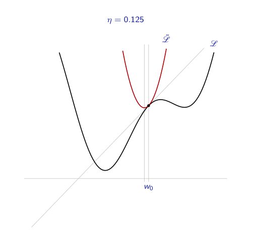
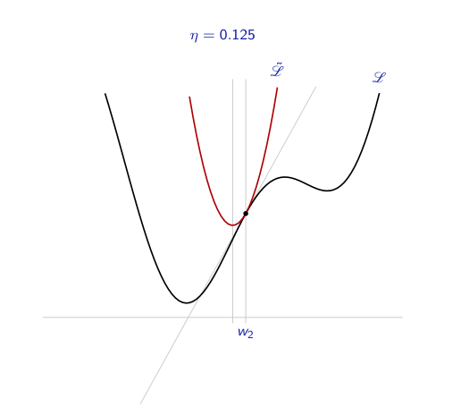
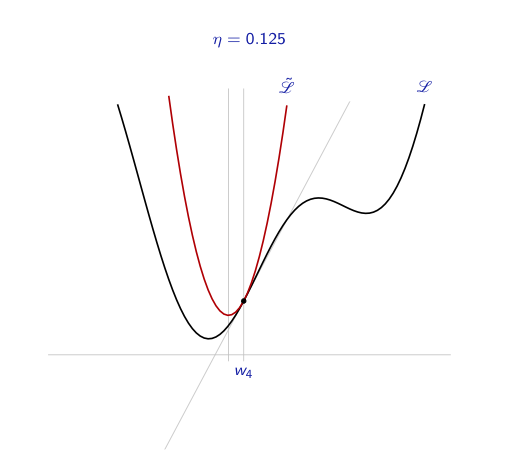
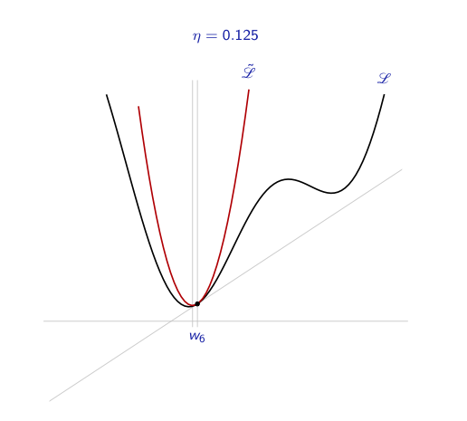

class: center, middle <!-----========================================================================================--------------> # Introduction au Deep Learning ## Réseaux de Neurones ###Rémy Courdier (UR)<BR>avec des slides de Evann Courdier (EPFL) <p id="last-updated">Dernière mise à jour : </p> .affiliations[   ] <!-----------------------------------------------------------------------------------------------------------> --- Plan du cours ### En théorie... - .grey[Présentation Générale Machine Learning et Deep Learning ] - Aspects theoriques du Machine learning et Deep Laerning - .grey[Introduction aux réseaux neuronaux convolutionnels] ### En pratique... .grey[ - TP : Classification d’images satellitaires - TP : Object detection / counting ] <!-----------------------------------------------------------------------------------------------------------> --- ## Notations - Un réseau de neurones correspond à une fonction $f$ qui a des paramètres ajustables $W$: $$ f( \boldsymbol{x} , W): \boldsymbol{x} \in \mathbb{R}^N \Longrightarrow f(\boldsymbol{x}) \in (0, 1)^K $$ -- <br> .center[ <img src="images/init/example_nn.png" style="width: 85%;" /> ] ??? Un réseau de neurones artificiel peut être vu comme une fonction mathématique paramétrée qui prend une entrée et produit une sortie, en ajustant des paramètres internes pour apprendre et effectuer des prédictions. <!-----------------------------------------------------------------------------------------------------------> --- ## Notations - Un réseau de neurones correspond à une fonction $f$ qui a des paramètres ajustables $W$: $$ f( \boldsymbol{x} , W): \boldsymbol{x} \in \mathbb{R}^N \Longrightarrow f(\boldsymbol{x}) \in (0, 1)^K $$ - Un élément du dataset $S$ est composé de : - une entrée : $\boldsymbol{x} \in \mathbb{R}^N$ - la sortie attendue : $y \in [0, K-1]$ -- - Probabilité que $\boldsymbol{x}$ appartient à la classe $c$ : $$ f(\boldsymbol{x}; W)_c = p(Y=c|X=\boldsymbol{x}) $$ ??? Un réseau de neurones est une fonction complexe f paramétrée par W , qui apprend en ajustant ces paramètres pour donner des résultats de plus en plus précis. Imaginons un réseau qui prédit si une image appartient à une des K catégories. Si x représente les caractéristiques de l’image et f(x, W) renvoie un vecteur de taille K de probabilités, la catégorie prédite sera celle avec la plus forte probabilité. <!-----------------------------------------------------------------------------------------------------------> --- ## Neurone Artificiel .center[] .credit[Slide credit: C. Ollion & O. Grisel] <!-----------------------------------------------------------------------------------------------------------> --- ## Neurone Artificiel .center[] .credit[Slide credit: C. Ollion & O. Grisel] -- .center[$z(\boldsymbol{x}) = w_0 x_0 + w_1 x_1 + ... + w_n x_n + b = \boldsymbol{w}^T \boldsymbol{x} + b$] --- ## Neurone Artificiel .center[ ] .credit[Slide credit: C. Ollion & O. Grisel] .center[ $z(\boldsymbol{x}) = w_0 x_0 + w_1 x_1 + ... + w_n x_n + b = \boldsymbol{w}^T \boldsymbol{x} + b$ $f(\boldsymbol{x}) = g(z(\boldsymbol{x})) = g(\boldsymbol{w}^T \boldsymbol{x} + b)$ ] -- - $\boldsymbol{x}, f(\boldsymbol{x}) \,\,$ Entrée et sortie - $z(\boldsymbol{x})\,\,\,$ Pré-activation - $\boldsymbol{w}, b\,\,$ Poids et biais - $g\,\,\,\,\,\,\,\,$ Fonction d'activation (non-linéarité) .credit[Slide credit: C. Ollion & O. Grisel] <!-----------------------------------------------------------------------------------------------------------> --- ## Couche de Neurones .center[ <img src="images/init/neural_network.svg" style="width: 400px;" /> ] .credit[Slide credit: C. Ollion & O. Grisel] <!-----------------------------------------------------------------------------------------------------------> --- ## Couche de Neurones .center[ <img src="images/init/neural_network_2.svg" style="width: 400px;" /> ] .credit[Slide credit: C. Ollion & O. Grisel] -- .center[ ] .center[ $\mathbf{z(x)} = \boldsymbol{W} \boldsymbol{x} + \mathbf{b}$ $\boldsymbol{f}(\boldsymbol{x}) = g(\mathbf{z(x)}) = g(\boldsymbol{W} \boldsymbol{x} + \mathbf{b})$ ] - $\boldsymbol{W}, \mathbf{b}\,\,$ sont maintenant une matrice et un vecteur .credit[Slide credit: C. Ollion & O. Grisel] <!-----------------------------------------------------------------------------------------------------------> --- ## Réseau à une couche cachée .center[ <img src="images/init/neural_network_hidden_1.svg" style="width: 700px;" /> ] <br/> - $\mathbf{z}^h(\boldsymbol{x}) = \boldsymbol{W}^h \boldsymbol{x} + \mathbf{b}^h$ - <span style="color:#cccccc"> $\mathbf{h}(\boldsymbol{x}) = g(\mathbf{z}^h(\boldsymbol{x})) = g(\boldsymbol{W}^h \boldsymbol{x} + \mathbf{b}^h)$</span> - <span style="color:#cccccc"> $\mathbf{z}^o(\boldsymbol{x}) = \boldsymbol{W}^o \mathbf{h}(\boldsymbol{x}) + \mathbf{b}^o$</span> - <span style="color:#cccccc"> $\boldsymbol{f}(\boldsymbol{x}) = softmax(\mathbf{z}^o) = softmax(\boldsymbol{W}^o \mathbf{h}(\boldsymbol{x}) + \mathbf{b}^o)$</span> .credit[Slide credit: C. Ollion & O. Grisel] ??? also named multi-layer perceptron (MLP) feed forward, fully connected neural network logistic regression is the same without the hidden layer <!-----------------------------------------------------------------------------------------------------------> --- ## Réseau à une couche cachée .center[ <img src="images/init/neural_network_hidden_2.svg" style="width: 700px;" /> ] <br/> - <span style="color:#cccccc"> $\mathbf{z}^h(\boldsymbol{x}) = \boldsymbol{W}^h \boldsymbol{x} + \mathbf{b}^h$</span> - $\mathbf{h}(\boldsymbol{x}) = g(\mathbf{z}^h(\boldsymbol{x})) = g(\boldsymbol{W}^h \boldsymbol{x} + \mathbf{b}^h)$ - <span style="color:#cccccc"> $\mathbf{z}^o(\boldsymbol{x}) = \boldsymbol{W}^o \mathbf{h}(\boldsymbol{x}) + \mathbf{b}^o$</span> - <span style="color:#cccccc"> $\boldsymbol{f}(\boldsymbol{x}) = softmax(\mathbf{z}^o) = softmax(\boldsymbol{W}^o \mathbf{h}(\boldsymbol{x}) + \mathbf{b}^o)$</span> .credit[Slide credit: C. Ollion & O. Grisel] <!-----------------------------------------------------------------------------------------------------------> --- ## Réseau à une couche cachée .center[ <img src="images/init/neural_network_hidden_3.svg" style="width: 700px;" /> ] <br/> - <span style="color:#cccccc"> $\mathbf{z}^h(\boldsymbol{x}) = \boldsymbol{W}^h \boldsymbol{x} + \mathbf{b}^h$</span> - <span style="color:#cccccc"> $\mathbf{h}(\boldsymbol{x}) = g(\mathbf{z}^h(\boldsymbol{x})) = g(\boldsymbol{W}^h \boldsymbol{x} + \mathbf{b}^h)$</span> - $\mathbf{z}^o(\boldsymbol{x}) = \boldsymbol{W}^o \mathbf{h}(\boldsymbol{x}) + \mathbf{b}^o$ - <span style="color:#cccccc"> $\boldsymbol{f}(\boldsymbol{x}) = softmax(\mathbf{z}^o) = softmax(\boldsymbol{W}^o \mathbf{h}(\boldsymbol{x}) + \mathbf{b}^o)$</span> .credit[Slide credit: C. Ollion & O. Grisel] <!-----------------------------------------------------------------------------------------------------------> --- ## Réseau à une couche cachée .center[ <img src="images/init/neural_network_hidden_4.svg" style="width: 700px;" /> ] <br/> - <span style="color:#cccccc"> $\mathbf{z}^h(\boldsymbol{x}) = \boldsymbol{W}^h \boldsymbol{x} + \mathbf{b}^h$</span> - <span style="color:#cccccc"> $\mathbf{h}(\boldsymbol{x}) = g(\mathbf{z}^h(\boldsymbol{x})) = g(\boldsymbol{W}^h \boldsymbol{x} + \mathbf{b}^h)$</span> - <span style="color:#cccccc">$\mathbf{z}^o(\boldsymbol{x}) = \boldsymbol{W}^o \mathbf{h}(\boldsymbol{x}) + \mathbf{b}^o$</span> - $\boldsymbol{f}(\boldsymbol{x}) = softmax(\mathbf{z}^o) = softmax(\boldsymbol{W}^o \mathbf{h}(\boldsymbol{x}) + \mathbf{b}^o)$ .credit[Slide credit: C. Ollion & O. Grisel] --- <!-----------------------------------------------------------------------------------------------------------> ## Réseau à une couche cachée .center[ <img src="images/init/neural_network_hidden_t.svg" style="width: 700px;" /> ] ### Implémentation PyTorch ```py model = torch.nn.Sequential( torch.nn.Linear(D_in, H), # weight matrix dim [D_in x H] torch.nn.RELU(), torch.nn.Linear(H, D_out), # weight matrix dim [H x D_out] torch.nn.Softmax(), ) ``` <!-----------------------------------------------------------------------------------------------------------> --- ## Différentes fonctions d'activation <br/> .center[ <img src="images/init/activation_functions.svg" style="width: 780px;" /> ] <br/></br> - Bleu: Fonction d'activation - Vert: Derivée .credit[Slide credit: C. Ollion & O. Grisel] <!-----------------------------------------------------------------------------------------------------------> --- ## Rappel - Notations - Un réseau de neurones correspond à une fonction $f$ qui a des paramètres ajustables $W$: $$ f( \boldsymbol{x} , W): \boldsymbol{x} \in \mathbb{R}^N \Longrightarrow f(\boldsymbol{x}) \in (0, 1)^K $$ - Un élément du dataset $S$ est composé de : - une entrée : $\boldsymbol{x} \in \mathbb{R}^N$ - sortie attendue : $y \in [0, K-1]$ - Probabilité que $\boldsymbol{x}$ appartient à la classe $c$ : $$ f(\boldsymbol{x}; W)_c = p(Y=c|X=\boldsymbol{x}) $$ <!-----------------------------------------------------------------------------------------------------------> --- ## La Loss On définit une fonction de **loss** (perte) qui, pour un élément du dataset, évalue la qualité de la prédiction de notre réseau. On définit cette fonction de telle sorte que plus la valeur de la loss est basse pour un exemple donné, meilleure est la prédiction du réseau pour cet exemple. -- Pour un élément $(\boldsymbol{x}, y)$ de $S$, on peut définir la fonction de loss $l$ comme: $$ l(\boldsymbol{f}(\boldsymbol{x}, \theta), y) = - \log(\boldsymbol{f}(\boldsymbol{x}, \theta)_{y_c}) $$ .center[ <img src="images/init/nll_explained.svg" style="width: 45%;margin-top: -20px;" /> ] <!-----------------------------------------------------------------------------------------------------------> --- ## La Loss Pour un exemple donné, la loss vaut: $$ l(\boldsymbol{f}(\boldsymbol{x}\_s;\theta), y\_s) = -\log \boldsymbol{f}(\boldsymbol{x}\_s;\theta)\_{y\_s} $$ On appelle fonction de coût la valeur moyenne de la loss calculée sur l'ensemble du dataset d'entraînement: $$ L\_S(\theta) = - \frac{1}{|S|} \sum\_{s \in S} \log \boldsymbol{f}(\boldsymbol{x}\_s;\theta)\_{y\_s} $$ Entraîner le réseau revient à trouver les valeurs des paramètres $\mathbf{\theta} = ( \boldsymbol{W}^h; \mathbf{b}^h; \boldsymbol{W}^o; \mathbf{b}^o )$ qui minimisent la fonction de coût. En pratique, pour chaque exemple du dataset S, on essaye de minimiser la fonction de loss associée. ??? On aime bien prendre la fonction log car elle simplifie les calculs dans la théorie qui justifie proprement la loss. <!-----------------------------------------------------------------------------------------------------------> --- ## Rappel - Gradient d'une fonction .center[ ] <!-----------------------------------------------------------------------------------------------------------> --- ## Rappel - Descente de Gradient <br> .center[] .credit[Slide credit: F. Fleuret] --- count:false ## Rappel - Descente de Gradient <br> .center[<img src="images/init/gd_2.png" height="400px"/>] .credit[Slide credit: F. Fleuret] --- count:false ## Rappel - Descente de Gradient <br> .center[] .credit[Slide credit: F. Fleuret] --- count:false ## Rappel - Descente de Gradient <br> .center[<img src="images/init/gd_4.png" height="400px"/>] .credit[Slide credit: F. Fleuret] --- count:false ## Rappel - Descente de Gradient <br> .center[] .credit[Slide credit: F. Fleuret] --- count:false ## Rappel - Descente de Gradient <br> .center[<img src="images/init/gd_6.png" height="400px"/>] .credit[Slide credit: F. Fleuret] --- count:false ## Rappel - Descente de Gradient <br> .center[] .credit[Slide credit: F. Fleuret] --- count:false ## Rappel - Descente de Gradient <br> .center[] .credit[Slide credit: F. Fleuret] --- count:false ## Rappel - Descente de Gradient <br> .center[] .credit[Slide credit: F. Fleuret] --- count:false ## Rappel - Descente de Gradient <br> .center[] .credit[Slide credit: F. Fleuret] --- count:false ## Rappel - Descente de Gradient <br> .center[<img src="images/init/gd_11.png" height="400px"/>] .center[ ### Minimum Global ] .credit[Slide credit: F. Fleuret] --- ## Rappel - Descente de Gradient <br> .center[<img src="images/init/gd_12.png" height="400px"/>] .credit[Slide credit: F. Fleuret] --- count:false ## Rappel - Descente de Gradient <br> .center[<img src="images/init/gd_13.png" height="400px"/>] .credit[Slide credit: F. Fleuret] --- count:false ## Rappel - Descente de Gradient <br> .center[<img src="images/init/gd_14.png" height="400px"/>] .credit[Slide credit: F. Fleuret] --- count:false ## Rappel - Descente de Gradient <br> .center[] .credit[Slide credit: F. Fleuret] --- count:false ## Rappel - Descente de Gradient <br> .center[<img src="images/init/gd_16.png" height="400px"/>] .credit[Slide credit: F. Fleuret] --- count:false ## Rappel - Descente de Gradient <br> .center[<img src="images/init/gd_17.png" height="400px"/>] .credit[Slide credit: F. Fleuret] --- count:false ## Rappel - Descente de Gradient <br> .center[] .credit[Slide credit: F. Fleuret] --- count:false ## Rappel - Descente de Gradient <br> .center[<img src="images/init/gd_19.png" height="400px"/>] .credit[Slide credit: F. Fleuret] --- count:false ## Rappel - Descente de Gradient <br> .center[<img src="images/init/gd_20.png" height="400px"/>] .credit[Slide credit: F. Fleuret] --- count:false ## Rappel - Descente de Gradient <br> .center[] .credit[Slide credit: F. Fleuret] --- count:false ## Rappel - Descente de Gradient <br> .center[] .credit[Slide credit: F. Fleuret] --- count:false ## Rappel - Descente de Gradient <br> .center[] .center[ ### Minimum Local ] .credit[Slide credit: F. Fleuret] <!-----------------------------------------------------------------------------------------------------------> --- ## Entraînement du réseau (SGD) - **Initialiser tous les paramètres $\mathbf{\theta}$ aléatoirement** -- - **Répéter :** -- - Sélectionner un élément $x_s$ du dataset S et calculer sa prédiction -- - Calculer les gradients : $\Delta = \nabla_\theta L\(x_s, \theta)$ -- - Mettre à jour les paramètres : $\mathbf{\theta} \leftarrow \mathbf{\theta} - \eta \Delta$ -- - **S'arrêter lorsque la loss ne décroit plus sur l'ensemble de validation** <!-----------------------------------------------------------------------------------------------------------> --- ## Backpropagation .center[ <img src="images/init/flow_graph.svg" width="90%" /> ] .center[ <img src="images/init/flow_graph_b.svg" width="90%" /> ] -- .center[ [<span id="maFleche"></span> CNN](cnn.html)] <!-----------------------------------------------------------------------------------------------------------> <!-----========================================================================================-------------->